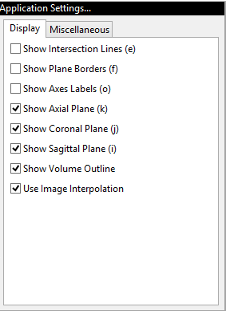
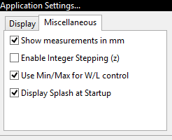

MicroView Application Settings
This section describes application settings in MicroView.
Overview
Select Edit → Application Settings... from MicroView's menu, to
change most of MicroView's display options. Pop-up help is available for
all options, simply by holding the mouse still over an option for a few
seconds. Many of the options have corresponding keyboard shortcuts,
which are displayed in square brackets to the right of the option. A
description of each option is listed below, along with a table of
corresponding keyboard shortcuts, where available.
Option Descriptions
Display

- Show Intersection Lines [e] - Toggles the visibility of axes lines. X, Y and Z axes are displayed in red, green and blue, respectively.
- Show Plane Borders [f] - Toggles the visibility of the border around each image plane in both 3D and 2D viewports.
- Set Gray Background [l] - Toggles the display background color between black and medium gray.
- Show Axes Labels [o] - Toggles the display of the '+X', '-X', '+Y', '-Y', '+Z' and '-Z' axes labels in the 3D viewport.
- Show Axial Plane [k] - Toggles the display of the z-plane image.
- Show Coronal Plane [j] - Toggles the display of the y-plane image.
- Show Sagittal Plane [i] - Toggles the display of the x-plane image.
- Show Volume Outline - Toggles the display of the yellow border surrounding the full extent of the image in the 3D viewport.
- Highlight Label [x] - Toggles highlighting of all annotations visible on the 3D viewports. For some images turning on label highlighting will make annotations easier to read.
- Use Image Interpolation - If enabled, MicroView uses bilinear interpolation when displaying image data. When disabled, nearest neighbor interpolation is used instead.
Miscellaneous

- Show measurements in mm - When enabled, line and position measurements are made in millimeters. If disabled, or if not available for a particular image, measurements are made in pixels.
- Enable Integer Stepping - If enabled, MicroView will prevent the display of bilinearly interpolated slices between actual data slices.
- Use Min/Max for W/L control - If enabled, image contrast and brightness are controlled by selecting minimum and maximum image values to view. Values below the minimum will be set to black, values above the maximum will be set to white. If disabled, window and level settings are used instead.
- Display Splash at Startup - If disabled, MicroView will avoid displaying a splash screen at program start up.